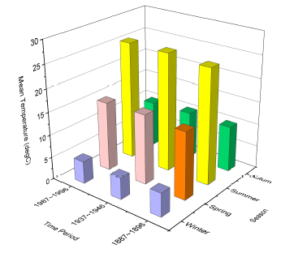
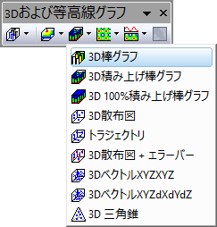

カテゴリのテキストXYデータの3D棒グラフ
3DXYZBar-Text-XY
- 
要求されるデータ
- ワークシート内でXYZ列を選択します。XとY列はカテゴリー/テキストデータです。
または、
- XとYがテキストのワークシートセルのブロック(仮想行列)を選択します。
グラフ作成
データを選択します。
メインメニューから、 を選択します。
または、
「3Dおよび等高線グラフ」ツールバーの「3D棒グラフ」ボタン をクリックします。
- 
テンプレート
- gl3DBARS.OTP (OpenGL)
- 3DBARS.OTP
(Originのプログラムフォルダにインストールされています。)